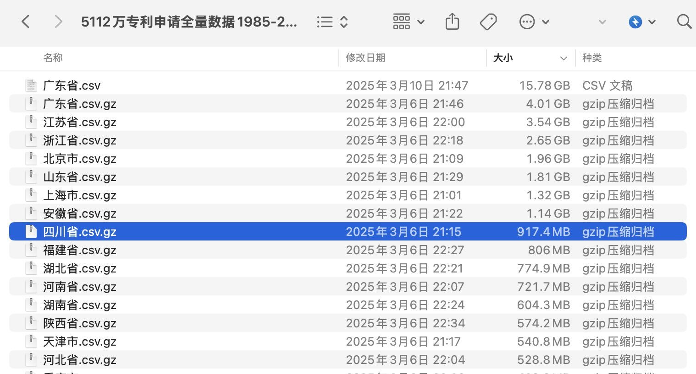
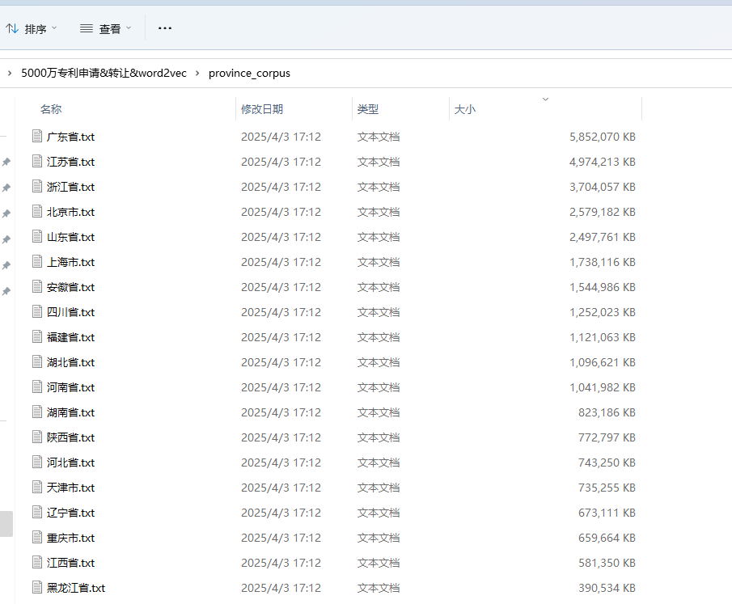
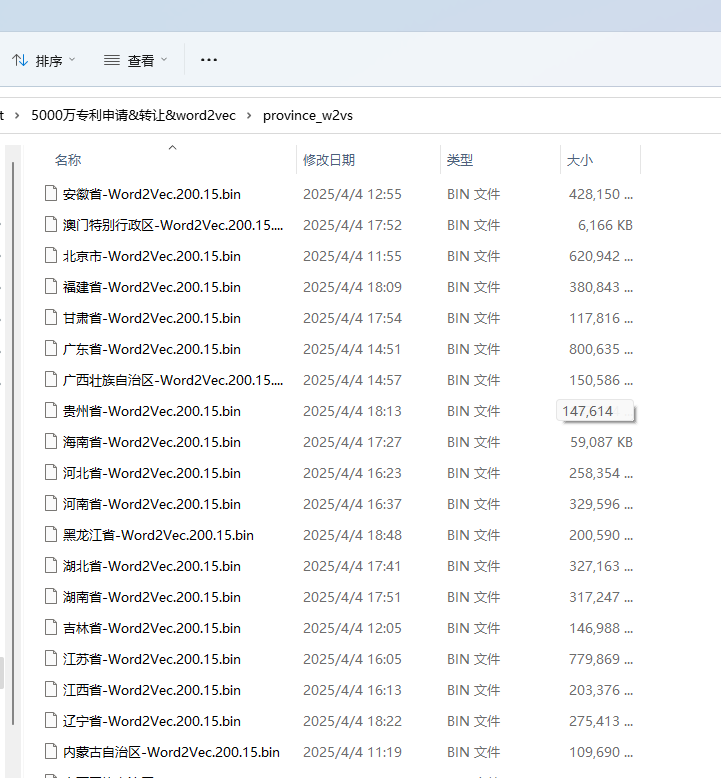

想用 中国专利申请数据集，按年份(或按省份)训练词向量的同学，可以好好看本文，能节省你几十个小时时间。
一、检查数据
这个数据集很大， 如图所示，文件动辄几G

之前分享过 , 面对巨大csv文件，我们要了解内部有哪些字段、字段的含义， 只读取需要的字段，减轻电脑内存压力， 让你能轻松应对几倍于内存的巨大csv文件。
import pandas as pd
# 以山东省.csv 为例， 只读第一行(前1行)
df = pd.read_csv('山东省.csv', nrows=5)
df

字段展示的不全，完整的字段应该有
df.columns
Run
Index(['专利名称', '专利类型', '申请人', '申请人类型', '申请人地址', '申请人国家', '申请人省份', '申请人城市',
'申请人区县', '申请号', '申请日', '申请年份', '公开公告号', '公开公告日', '公开公告年份', '授权公告号',
'授权公告日', '授权公告年份', 'IPC分类号', 'IPC主分类号', '发明人', '摘要文本', '主权项内容', '当前权利人',
'当前专利权人地址', '专利权人类型', '统一社会信用代码', '引证次数', '被引证次数', '自引次数', '他引次数',
'被自引次数', '被他引次数', '家族引证次数', '家族被引证次数'],
dtype='object')
训练词向量主要用文本数据， 在本案例中， 需要的字段 [专利摘要] 。
二、构造语料
在 [5000万专利申请全量数据1985-2025年] 文件夹中，
- 新建 [province_corpus] 和 [year_corpus] 两个文件夹
- 新建 [code.ipynb]
构造语料对电脑的性能要求不高， 不论你的电脑是什么配置，基本都能运行， 而且耗时在能接受的范围。
2.1 文件树结构
5000万专利申请全量数据1985-2025年
|---中国专利数据库.csv.gz
|---code.ipynb
|---province_corpus
|---安徽省.txt
|---浙江省.txt
|---...
|---year_corpus
|---2025.txt
|---2024.txt
|---...
|---provin_w2vs
|---安徽省-Word2Vec.200.15.bin
|---山东省-Word2Vec.200.15.bin
|---...
|---year_w2vs
|---2025-Word2Vec.200.15.bin
|---2022-Word2Vec.100.6.bin.syn1neg.npy
|---2022-Word2Vec.100.6.bin.wv.vectors.npy
|---...
2.2 构造语料代码
%%time
import pandas as pd
from pathlib import Path
from tqdm import tqdm
# 读取csv文件， 只读取需要的字段
# 按 100000 行分块读取， 避免内存溢出
chunk_dfs = pd.read_csv('中国专利数据库.csv.gz',
compression='gzip',
usecols = ['申请人省份', '申请日', '专利名称', '摘要文本'],
chunksize=100000)
for chunk_df in tqdm(chunk_dfs):
chunk_df['申请日'] = pd.to_datetime(chunk_df['申请日'])
# 新建 province_corpus 和 year_corpus文件夹
province_dir = Path('province_corpus')
province_dir.mkdir(parents=True, exist_ok=True)
year_dir = Path('year_corpus')
year_dir.mkdir(parents=True, exist_ok=True)
# 按省份和年份构造语料
for date, year_df in chunk_df.groupby(pd.Grouper(key='申请日', freq='YE')):
print(date.year)
year_file = year_dir / f"{date.year}.txt"
with open(year_file, 'a+', encoding='utf-8') as yf:
y_text_series = year_df['专利名称'].fillna('') + year_df['摘要文本'].fillna('')
y_text = '\n'.join(y_text_series)
yf.write(y_text)
for prov, prov_df in chunk_df.groupby('申请人省份'):
print(prov)
prov_file = province_dir / f"{prov}.txt"
with open(prov_file, 'a+', encoding='utf-8') as pf:
prov_text_series = prov_df['专利名称'].fillna('') + prov_df['摘要文本'].fillna('')
prov_text = '\n'.join(prov_text_series)
pf.write(prov_text)
Run
2025
2024
...
上海市
云南省
...
安徽省
CPU times: total: 27min 55s
Wall time: 39min 10s
构造语料用 40 分钟时间，得到文件夹province_corpus和year_corpus。


三、训练word2vec
需要注意， 训练word2vec需要耗费很大的计算能力， 训练时间需要一两三。 本文使用的 cntext2.1.5 版本
3.1 安装cntext
cd desktop
pip install cntext --upgrade
3.2 开始训练
%%time
import glob
from pathlib import Path
import cntext as ct
import os
# 分年份训练
for year_f in glob.glob('year_corpus/*.txt'):
# 训练word2vec，自动保存到output文件夹内
ct.Word2Vec(corpus_file = year_f,
vector_size=200,
window_size=15,
only_binary=True)
# 将output文件夹重命名为year_w2vs
os.rename('output', 'year_w2vs')
# 分省份训练
for prov_f in glob.glob('province_corpus/*.txt'):
# 训练word2vec，自动保存到output文件夹内
ct.Word2Vec(corpus_file = prov_f,
vector_size=200,
window_size=15,
only_binary=True)
# 将output文件夹重命名为province_w2vs
os.rename('output', 'province_w2vs')
Run
Windows System, Unable Parallel Processing
Cache output\1985_cache.txt Not Found or Empty, Preprocessing Corpus
Processing Corpus: 100%|████████████████████████████████████████████████████████| 10009/10009 [00:13<00:00, 734.66it/s]
Reading Preprocessed Corpus from output\1985_cache.txt
Start Training Word2Vec
Word2Vec Training Cost 17 s.
Output Saved To: output\1985-Word2Vec.200.15.bin
......
......
Windows System, Unable Parallel Processing
Cache output\2025_cache.txt Not Found or Empty, Preprocessing Corpus
Processing Corpus: 100%|████████████████████████████████████████████████████████| 10009/10009 [00:13<00:00, 734.66it/s]
Reading Preprocessed Corpus from output\2025_cache.txt
Start Training Word2Vec
Word2Vec Training Cost 17 s.
Output Saved To: output\2025-Word2Vec.200.15.bin
Windows System, Unable Parallel Processing
Cache output\上海市_cache.txt Not Found or Empty, Preprocessing Corpus
Processing Corpus: 100%|██████████████████████████████████████████████████| 2456943/2456943 [03:42<00:00, 11048.35it/s]
Reading Preprocessed Corpus from output\上海市_cache.txt
Start Training Word2Vec
Word2Vec Training Cost 1400 s.
Output Saved To: output\上海市-Word2Vec.200.15.bin
......
......
Windows System, Unable Parallel Processing
Cache output\黑龙江省_cache.txt Not Found or Empty, Preprocessing Corpus
Processing Corpus: 100%|█████████████████████████████████████████████████████| 544329/544329 [01:07<00:00, 8114.12it/s]
Reading Preprocessed Corpus from output\黑龙江省_cache.txt
Start Training Word2Vec
Word2Vec Training Cost 320 s.
Output Saved To: output\黑龙江省-Word2Vec.200.15.bin
CPU times: total: 21354 s
Wall time: 21758 s
训练省份词向量大概用了 6 小时，模型文件保存在 provin_w2vs 和 year_w2vs 文件夹内。


三、使用word2vec
3.1 导入模型
output/provin_w2vs 和 output/year_w2vs 内有多个模型， 单个的模型文件大约几十M ~ 几百M， 但不建议一次性导入进来。大邓的电脑内存96G，为了省事，就一次性全导入了。
import cntext as ct
import glob
from tqdm import tqdm
# 导入各省份词向量
provin_w2vs_ = []
provin_w2v_fs = glob.glob('province_w2vs/*.bin')
for provin_w2v_f in tqdm(provin_w2v_fs):
provin_w2v = ct.load_w2v(provin_w2v_f)
provin_w2vs_.append(provin_w2v)
# 导入各年份词向量
year_w2vs_ = []
year_w2v_fs = glob.glob('year_w2vs/*.bin')
for year_w2v_f in tqdm(year_w2v_fs):
year_w2v = ct.load_w2v(year_w2v_f)
year_w2vs_.append(year_w2v)
Run
3%|██▍ | 1/34 [00:03<01:57, 3.57s/it]
Loading province_w2vs\上海市-Word2Vec.200.15.bin...
6%|████▉ | 2/34 [00:04<01:11, 2.23s/it]
Loading province_w2vs\云南省-Word2Vec.200.15.bin...
......
97%|███████████████████████████████████████████████████████████████████████████████▌ | 33/34 [01:07<00:01, 1.10s/it]
Loading province_w2vs\香港特别行政区-Word2Vec.200.15.bin...
100%|██████████████████████████████████████████████████████████████████████████████████| 34/34 [01:09<00:00, 2.04s/it]
Loading province_w2vs\黑龙江省-Word2Vec.200.15.bin...
2%|██ | 1/41 [00:00<00:05, 7.10it/s]
Loading year_w2vs\1985-Word2Vec.200.15.bin...
Loading year_w2vs\1986-Word2Vec.200.15.bin...
10%|████████ | 4/41 [00:00<00:05, 6.80it/s]
......
100%|██████████████████████████████████████████████████████████████████████████████████| 41/41 [01:11<00:00, 1.75s/it]
Loading year_w2vs\2025-Word2Vec.200.15.bin...
3.2 查看词汇量
from pathlib import Path
print('省份Word2vec词汇量')
for provin_w2v_f, provin_w2v in zip(provin_w2v_fs, provin_w2vs_):
province = Path(provin_w2v_f).stem.split('-')[0]
print(f'{province} 词汇量: {len(provin_w2v)}')
Run
省份Word2vec词汇量
上海市 词汇量: 640941
云南省 词汇量: 205193
内蒙古自治区 词汇量: 138507
北京市 词汇量: 783162
台湾省 词汇量: 242630
吉林省 词汇量: 185587
四川省 词汇量: 494241
天津市 词汇量: 373286
宁夏回族自治区 词汇量: 91592
安徽省 词汇量: 540111
山东省 词汇量: 722886
山西省 词汇量: 188013
广东省 词汇量: 1010230
广西壮族自治区 词汇量: 190128
新疆维吾尔自治区 词汇量: 110063
江苏省 词汇量: 983871
江西省 词汇量: 256695
河北省 词汇量: 326042
河南省 词汇量: 415905
浙江省 词汇量: 795041
海南省 词汇量: 74657
湖北省 词汇量: 412827
湖南省 词汇量: 400262
澳门特别行政区 词汇量: 7806
甘肃省 词汇量: 148753
福建省 词汇量: 480456
西藏自治区 词汇量: 23115
贵州省 词汇量: 186345
辽宁省 词汇量: 347563
重庆市 词汇量: 358991
陕西省 词汇量: 381781
青海省 词汇量: 53325
香港特别行政区 词汇量: 71947
黑龙江省 词汇量: 253129
print('年份word2vec词汇量')
for year_w2v_f, year_w2v in zip(year_w2v_fs, year_w2vs_):
year = Path(year_w2v_f).stem.split('-')[0]
print(f'{year}: {len(year_w2v.index_to_key)}')
Run
年份word2vec词汇量
1985: 15494
1986: 17945
1987: 23625
1988: 27740
1989: 27394
1990: 32920
1991: 37584
1992: 45393
1993: 48326
1994: 46725
1995: 46138
1996: 50117
1997: 53625
1998: 57187
1999: 65154
2000: 78368
2001: 95927
2002: 123513
2003: 145087
2004: 158694
2005: 185840
2006: 215856
2007: 240167
2008: 279364
2009: 334179
2010: 382888
2011: 449648
2012: 508506
2013: 621644
2014: 625248
2015: 685487
2016: 732443
2017: 760332
2018: 776968
2019: 789104
2020: 817553
2021: 799388
2022: 734045
2023: 596784
2024: 516263
2025: 21230
3.3 语义检查-省份
先检查省份， 查看与[‘创新’, ‘新颖’]最相似的5个词，通过语义捕捉准确与否，粗略判断Word2vec训练效果的好坏。
for provin_w2v_f, provin_w2v in zip(provin_w2v_fs, provin_w2vs_):
try:
province = Path(provin_w2v_f).stem.split('-')[0]
wordweigths = provin_w2v.most_similar(['创新', '新颖'], topn=5)
words = [w for w,p in wordweigths]
print(f'{province}: {" ".join(words)}')
except:
print(f'{province}: NA')
Run
上海市: 独特 巧妙 创新性 理念 新颖结构合理
云南省: 独特 巧妙 精巧 科学合理 新颖合理
内蒙古自治区: 理念 独特 巧妙 合理使用方便 全新
北京市: 巧妙 独特 全新 借鉴 新颖使用方便
台湾省: 全新 独特 精巧 简洁 巧妙
吉林省: 理念 思路 现代 全新 巧妙
四川省: 巧妙 独特 全新 理念 合理使用方便
天津市: 独特 巧妙 合理使用方便 巧妙使用方便 全新
宁夏回族自治区: 更具 多样 丰富 性价比 市场前景
安徽省: 巧妙 独特 巧妙使用方便 合理 合理结构紧凑
山东省: 巧妙 精巧 新颖结构合理 巧妙结构合理 全新
山西省: 独特 全新 科学 现代 已有
广东省: 巧妙 独特 创新性 合理 精巧
广西壮族自治区: 独特 巧妙 合理使用方便 精巧 合理实用性
新疆维吾尔自治区: 合理使用方便 巧妙 简单合理 科学合理 合理
江苏省: 巧妙 独特 合理 全新 科学
江西省: 独特 科学合理 巧妙 简洁 精巧
河北省: 巧妙 新颖使用方便 精巧 独特 理念
河南省: 巧妙 科学合理 独特 新颖使用方便 巧妙使用方便
浙江省: 独特 巧妙 科学 精巧 合理
海南省: 思路 科学合理 人性化 科学 独特
湖北省: 巧妙 巧妙合理 科学合理 独特 新颖结构合理
湖南省: 巧妙 精巧 独特 新颖独特 巧妙结构合理
澳门特别行政区: 撞击 边坡 溜槽 耐高温 材料制成
甘肃省: 独特 全新 理念 现代 普及
福建省: 巧妙 新颖使用方便 独特 巧妙结构合理 全新
西藏自治区: 既能 十分 疲劳 范围广 更加人性化
贵州省: 巧妙 独特 科学合理 合理使用方便 精巧
辽宁省: 巧妙 巧妙结构合理 新颖结构合理 新颖独特 独创
重庆市: 合理使用方便 科学合理 精巧 全新 新颖使用方便
陕西省: 巧妙 独特 新颖结构合理 合理 合理使用方便
青海省: 突破 织机 现行 经济环保 杆织机
香港特别行政区: 全新 更具 美感 市场 丰富
黑龙江省: 独特 精巧 科学合理 巧妙 构思
从上面的运行结果看， 除青海省，剩下的绝大多数的省份的Word2vec都很准确的捕捉到了专利摘要的语义信息。
3.4 语义检查-年份
查看与[‘创新’, ‘新颖’]最相似的5个词，通过语义捕捉准确与否，粗略判断Word2vec训练效果的好坏。
for year_w2v_f, year_w2v in zip(year_w2v_fs, year_w2vs_):
try:
year = Path(year_w2v_f).stem.split('-')[0]
wordweigths = year_w2v.most_similar(['创新', '新颖'], topn=5)
words = [w for w,p in wordweigths]
print(f'{year}: {" ".join(words)}')
except:
print(f'{year}: NA')
Run
1985: 公知 专门 特别适用 提出一种 机器人
1986: 植入 理发 135 婴儿车 街道
1987: 落后 儿童智力开发 低档 胶鞋 指甲
1988: 目前市场 低档 捕鱼 证件 普遍使用
1989: 价廉物美 课堂教学 普及型 大众 得心应手
1990: 单纯 精简 多方面 机等 应用领域
1991: 普及型 前途 大众 现代 现代化
1992: 构思 保留传统 不失为 全新 机之
1993: 完美 现代科技 崭新 式样 边墙
1994: 样式 别致 造型新颖 显得 华贵
1995: 多样 结实耐用 独特 别致 高档
1996: 花样 耐冲击浮标 极其 式样新颖 应用范围
1997: 实用美观 室内外装饰 标准化 多变 形象逼真
1998: 现代 改革 开发 高雅 创造
1999: 现代 市场 越来越 款式 大方
2000: 全新 娱乐性趣味性 多样化 多方面 各种各样
2001: 完美 现代 新颖别致 多样化 体现
2002: 全新 现代 实为 科学 大众
2003: 全新 突破传统 多样化 体现 科学
2004: 全新 科技 现代 市场 科学合理
2005: 创意 理念 全新 科学 现代
2006: 全新 构思 理念 新颖性 独特
2007: 全新 突破传统 巧妙 独特 现代
2008: 独特 巧妙 全新 新颖独特 设计理念
2009: 独特 巧妙 全新 科学 新颖独特
2010: 独特 新颖独特 精巧 巧妙 科学合理
2011: 独特 精巧 新颖独特 科学合理 巧妙
2012: 独特 巧妙 新颖独特 精巧 科学合理
2013: 独特 新颖独特 精巧 科学合理 巧妙
2014: 巧妙 独特 科学合理 巧妙合理 精巧
2015: 巧妙 独特 巧妙合理 新颖结构合理 科学合理
2016: 巧妙 结合现在 巧妙合理 独特 全新
2017: 巧妙 科学合理 独特 科学 合理
2018: 巧妙 独特 合理 科学 全新
2019: 巧妙 独特 合理 全新 精巧
2020: 巧妙 独特 合理 精巧 设计
2021: 巧妙 精巧 合理 新颖结构合理 全新
2022: 巧妙 全新 独特 创新性 精巧
2023: 巧妙 独特 全新 创新性 精巧
2024: 巧妙 创新性 独特 精巧 全新
2025: 相结合 双重 独特 多重 优势
也试了其他的词语，好像 1998 年之后的捕捉的语义是准确的。
四、研究潜力: 语义变迁研究方法介绍
假设语义都很准的话， 是可以研究 语义变迁 或者 语义差异 的。 但需要注意， 不能直接使用两个年份或者两个省份的中word1和word2的距离来体现语义的变迁或者语义的差异。 如果想做省份间差异或者某省份随时间的变化， 需要用到 对齐算法， 常用的算法是 正交Procrustes矩阵对齐， 使得同省份不同年份或者通年份不同省份的word2vec都有相同的语义空间。
4.1 正交Procrustes算法
正交Procrustes矩阵对齐是一种将两个预训练语言模型的词向量矩阵对齐的方法，使得它们在相同的语义空间中表示。具体来说，它通过计算一个正交矩阵，将两个词向量矩阵进行线性变换，使得它们的Frobenius范数之和最小，从而实现对齐。 在 cntext2.x中实现了Procrustes对齐函数 ct.procrustes_align()，具体可阅读 文本分析库cntext2.x使用手册
4.2 语义变迁流程图
语义变迁类研究的流程图可参考 DiachronicEmb-BigHistData

大邓在 可视化 | 人民日报语料反映七十年文化演变 实现了历时语义对齐， 可以看出70 年整个中国社会的认知变迁。
4.3 识别语义变化时间点
该项目研究了1800-1910期间， 每10年为一个单位训练词向量， 探究词语变化。以 railway 和 traffic 为例, 先用 余弦相似度(cosine-similarity)算法识别词语语义变化的时间点，如下图

4.4 绘制语义变化轨迹
语义变化轨迹

五、获取资源
- 免费 专利摘要-Word2Vec.200.15.bin https://pan.baidu.com/s/1CgBjy96hDKM2GKQY4G6kYA?pwd=ba92
- 免费 province_w2vs https://pan.baidu.com/s/1eBFTIZcv2DWssLiaRnCqZQ?pwd=ikpu
- 免费 year_w2vs https://pan.baidu.com/s/1lrVkML92cVJdHQa1HQyAwA?pwd=4gqa
cntext使用声明
如在研究或项目中使用 cntext ，请在文中介绍并附引用声明。引用格式可参考 cntext 推荐引用格式